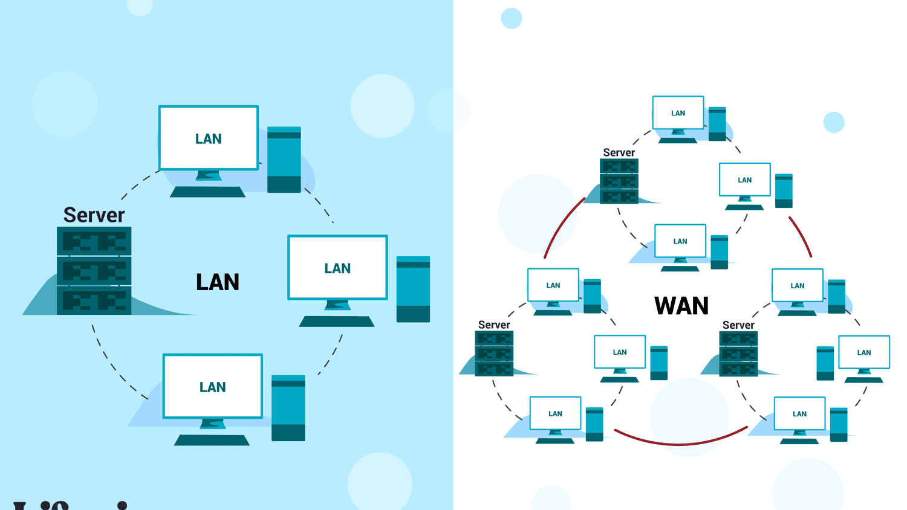
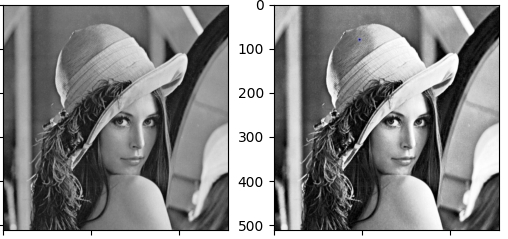
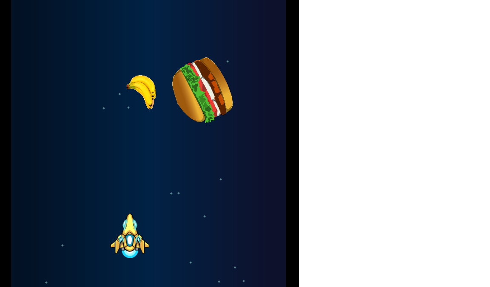

Portofolio

Membuat perencanaan jaringan dengan menggunakan cisco dan melakukan implementasi dengan menggunakan MikroTik.

Membuat website sederhana dengan menggunakan HTML dan CSS atau dengan menggunakan bootstrap.

Membuat machine learning untuk prediksi minat seseorang atau perkiraan cuaca berdasarkan data.

Membuat game sederhana dengan menggunakan construct 2.